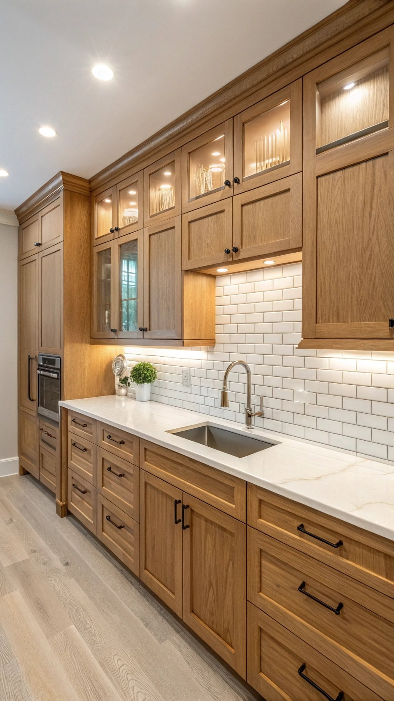

خدماتنا المتميزة
صالونات راقية
تصميم وتفصيل صالونات مغربية تجمع بين الأصالة والراحة العصرية.
أسقف منقوشة
نقش يدوي وفني على خشب الأرز والعرعار مستوحى من التراث الأندلسي.

خزائن ومطابخ
تركيب وتفصيل خزائن عصرية ومطابخ عملية بجودة خشب استثنائية.